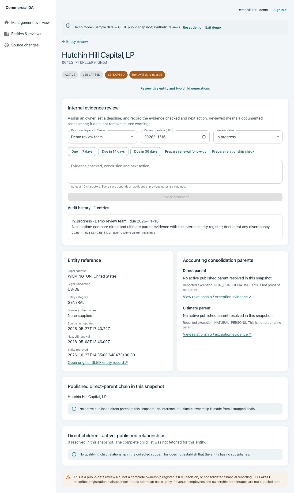
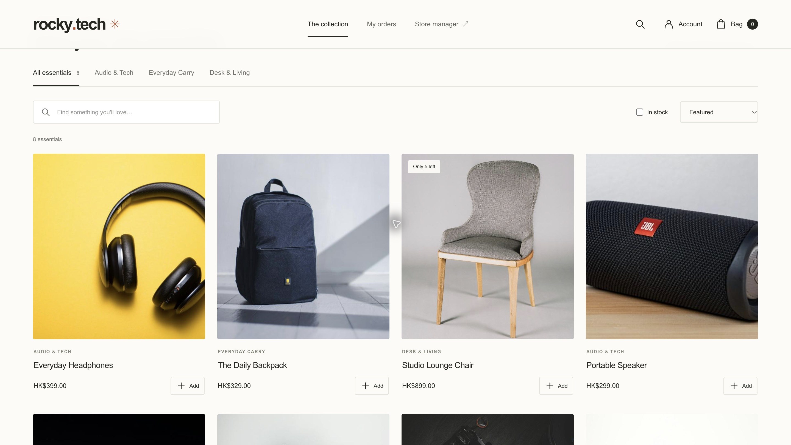
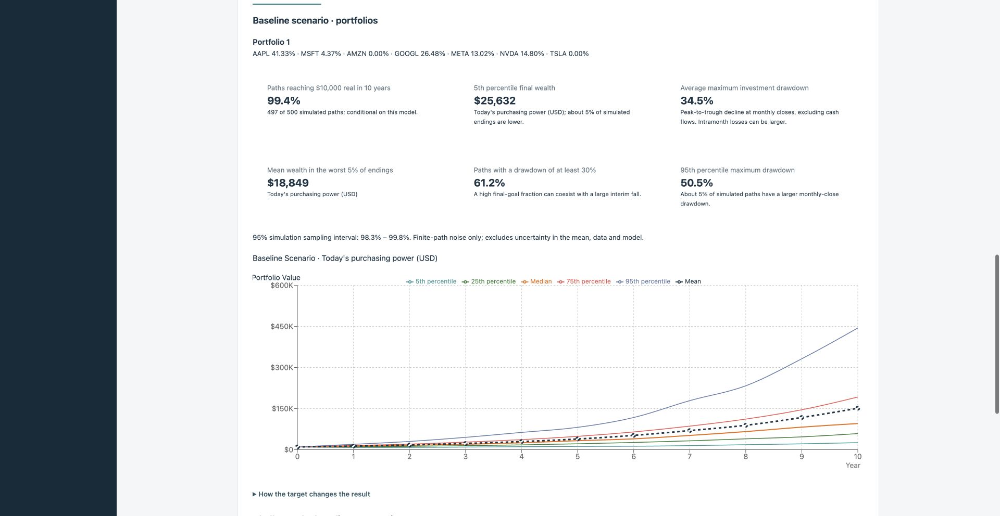

01 / Data governance
Commercial DA
Explore company hierarchies and review evidence.
Independent project using public GLEIF data.
Next.jsNestJSMySQLRedis
Preview a sample screen


Actual local screenshot · Sample data · Static previewHong Kong · Open to software engineering opportunities
Backend development · Full-stack applications · Test automation
01 / Projects
Browse the store or try a demo with sample data. No account needed to explore.
Explore company hierarchies and review evidence.
Independent project using public GLEIF data.

Actual local screenshot · Sample data · Static previewBrowse products, add to your bag and apply vouchers.
Checkout requires an account and uses Stripe test payments.

Storefront screenshot · Static previewExplore a risk profile, compare allocations and simulate portfolio outcomes.
Research demo with Monte Carlo simulation.

Actual local screenshot · Sample data · Static preview02 / Experience

Testing & Commissioning Intern
Sep 2025 – May 2026
Software Development Project Intern
Jun 2025 – Jul 2025
03 / Education

MSc in Information Engineering
Sep 2025 – Nov 2026
GPA 3.425 / 4.0

BSc (Hons) in Financial Technology & Artificial Intelligence
Sep 2021 – Jun 2025
GPA 3.34 / 4.3
04 / Contact